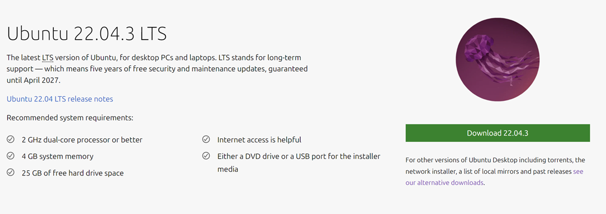
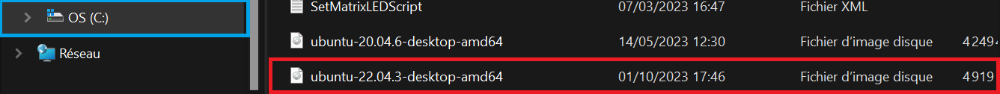
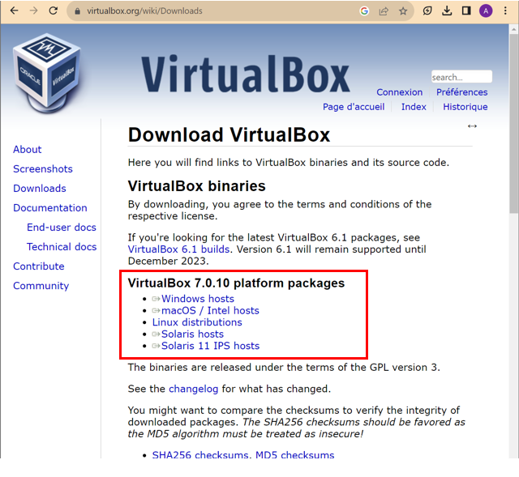

Tutoriel : Installation de ROS2
Table des matières
Téléchargement de l'image Linux
Cette partie est assez rapide. Voici les différentes étapes :
-
Téléchargez l'image de Ubuntu 22.04 (Jammy Jellyfish) sur le site officiel de Ubuntu.
Cliquez sur Download 22.04.03 et le téléchargement se lancera tout seul:
 -
Enregistrez/déplacez l'image (fichier .iso) dans le répertoire général de l'ordinateur (ici 'C:\').

Installation d'Oracle VM VirtualBox
Dans cette partie, nous allons installer l'application Oracle VM. Cette applicaion permet de pouvoir créer des machines virtuelles sur votre environnement. Voici les différentes étapes à suivre :
-
Téléchargez VirtualBox 7.0.10 pour votre OS sur le site officiel de VirtualBox.
Cliquez sur le type de votre OS. Cela téléchargera l'installateur de VirtualBox:
 -
Suivez ensuite les instructions de l'installateur de VirtualBox
Création de la machine virtuelle avec l'image d'Ubuntu 22.04
Dans cette partie, nous allons créer une machine virtuelle ROS2 grâce à l'application Oracle VM.
Voici comment procéder :
Ouvrez l'application Oracle VM VirtualBox.
-
Lancez la création d'une Machine Virtuelle en cliquant sur :

-
Remplissez la fenêtre comme suit, en lui donnant un nom (« ROS2 » par exemple) et en sélectionnant le chemin de l'image Linux Ubuntu 22.04, puis cliquez sur « Suivant » :

-
Créez un domaine d'utilisateur, Username et Password. Vous pouvez les choisir comme vous voulez (mais retenez-les !). Ne pas toucher la partie « Additional Options ». (Dans mon cas User : insa et Password : insa) :

-
Réglez ensuite la quantité de RAM maximale que la machine virtuelle utilisera (un minimum de 4Go rendra la machine plus rapide et réactive) et le nombre de cœurs du processeur que l'on attribuera à la machine virtuelle (entre 4 et 6 cœurs) :

-
Choisissez ensuite la taille du disque virtuel que l'on va créer sur le disque dur de l'ordinateur réel (Après l'installation de ROS2 18Go sont utilisés => Prendre minimum 25Go pour être sûr) :

-
Finissez la création de la Machine Virtuelle en cliquant sur « Finish » :

-
Vous obtenez donc notre Machine Virtuelle « ROS2 » avec Ubuntu 22.04 :

Lancement et paramétrage de la machine virtuelle
Dans cette partie, nous allons allumer mais aussi paramétrer notre machine virtuelle (VM).
Lancement de la VM
-
On lance la VM avec le bouton « Afficher » :

-
Le premier allumage de la Machine Virtuelle peut être assez long. Une fois quelle est lancée, on arrive sur l'écran de verrouillage. Sélectionnez le Username créé à la section ci-dessus et rentrer le Password :

Le clavier de la machine virtuelle est en QWERTY et est différent du votre (AZERTY) !
Modification de la langue
-
Modifiez la langue du clavier de la VM pour passer de QWERTY à AZERTY. Suivez les étapes ci-dessous :
Allez dans "Settings"
Puis dans "Keyboard"
Ensuite, cliquez sur le "+" dans la partie "Input Sources" :

- Supprimez le clavier US en cliquant sur les petits points à droite du clavir US (permet de ne laisser que la clavier FR)
Cliquez sur les "..." (Les "..." correspondent à "more languages").
Tapez "French"
Et cliquez sur "French (alt.)"
Cliquez sur le bouton "Add"
-
Modifiez la langue du système de la VM pour passer de anglais à français. Suivez les étapes ci-dessous :
Aller dans l'onglet "Language and Region :"

Dans la partie Language, cliquez sur "Manage Installed Languages"
Cliquez sur "Install/Remove Languages"
Sélectionnez la langue "French" et cliquez sur "Apply"
Retournez dans l'onglet "Region and Language" et cliquez sur "Language" et sélectionner "French (variante) :"

-
Redémarrage de la machine virtuelle :
Fermez la fenêtre des paramètres.
Et Cliquez sur l'onglet "Machine" puis "Redémarrage" :

-
Vous devriez ensuite voir que vos paramètres ont bien été modifiés :

-
Attention il y a un bug qui remets le clavier en QWERTY sur l'écran de verrouillage (Ce bug sera réglé juste après l'étape de mise à jour du système).
Mise à jour de la verion d'Ubuntu 22.04
-
Ouvrez un terminal avec "crtl+alt+T" et tapez les commandes :
sudo apt-get update sudo apt upgrade
-
Dans le cas où votre user (ici insa) n'est pas dans les utilisateurs administrateurs, il faut passez en mode root :
-
Passez en mode root en tapant la commande :
sudo -i
Maintenant vous pourrez voir que votre terminal à changé. Vous êtes en mode root#. La commande adduser insa sudo permet d'ajouter l'utilisateur insa à la liste des sudo (= super-utilisateurs et/ou administrateurs). La commande exit permet de sortir du mode root# et de revenir dans un terminal normal.
-
Tapez donc ces commandes :
adduser insa sudo exit
Faites un redémarrage de votre machine virtuelle pour qu'elle prenne en compte le changement d'utilisateur.
-
Ouvrez de nouveau un terminal avec "crtl+alt+T", puis tapez les commandes qui n'ont pas été réalisées précédemment suite au problème d'utilisateur :
sudo apt-get update sudo apt upgrade
-
Vous venez de faire la mise à jour d'Ubuntu et de tous ses packages !
Résolution d'un bug de clavier pour l'écran de verrouillage
-
Ouvrez un terminal et taper les commandes suivantes pour régler le problème du clavier qui revient en QWERTY à chaque démarrage pour l'écran de verrouillage :
sudo apt purge ~c sudo loadkeys fr setxkbmap fr
-
La prochaine commande permet de rentrer différents paramètres de clavier (comme le nombre de touches, la langue,...) :
sudo dpkg-reconfigure keyboard-configuration
Remplir alors les paramètres en fonction de votre clavier puis faites un reboot de votre VM.
Votre machine à donc le clavier en AZERTY partout, même sur l'écran de verrouillage !
Modification de la résolution de l'écran de la VM
Pour que l'écran de la VM ait la même taille que l'écran de votre ordinateur :
-
Ouvrez les paramètres et aller dans l'onglet "Ecran"". Modifier la "Définition" en fonction de la taille/résolution de votre écran d'ordinateur.
-
Si, lors du changement de résolution, un écran noir apparaît, cela implique que la mémoire vidéo assignée à votre VM n'est pas suffisante pour la résolution souhaitée. Suivez les instructions suivantes :
Annulez les modifications effectuées !
-
Eteignez la VM en mode "Eteindre la machine" et pas en mode "Enregistrer l'état de la machine". En cliquant dans l'onglet "Fichier" puis "Eteindre".
-
Allez dans les paramètres de "Configuration" de votre VM. Puis, allez dans l'onglet affichage pour augmenter la mémoire vidéo allouée (la mettre au max si possible).
Modification des paramètres Wifi de la VM
Dans la suite des tutoriels, vous aurez besoin de pouvoir faire communiquer la VM avec votre ordinateur et aussi de connecter la VM à la carte Wifi de votre ordinateur. Pour ce faire, il faut modifier les paramètres de base de la VM.
Suivez les instructions suivantes :
-
Eteignez la VM en mode "Eteindre la machine" et pas en mode "Enregistrer l'état de la machine". Pour ce faire cliquez sur l'onglet "Fichier" puis "Eteindre" en haut de la VM.
-
Allez dans les paramètres de "Configuration" de votre VM. Puis, allez dans "Réseau", sélectionnez "Mode d'accès réseaux : Accès par pont".
-
Sélectionner ensuite la carte Wifi de votre ordinateur.
-
Pour finir et toujours dans "Réseau", ouvrez le menu déroulant "advanced" et sélectionnez : "Mode promiscuité=Allow All".
Cela évitera les problèmes d'adresses IP lors des différents tutoriels et TP.
Installation de ROS2 Humble
Configuration du système pour l'installation de ROS2
-
Définir les paramètres linguistiques :
locale # check for UTF-8 sudo apt update && sudo apt install locales sudo locale-gen en_US en_US.UTF-8 sudo update-locale LC_ALL=en_US.UTF-8 LANG=en_US.UTF-8 export LANG=en_US.UTF-8 locale # verify settings
-
Assurez-vous d'abord que le dépôt Ubuntu Universe est activé :
sudo apt install software-properties-common sudo add-apt-repository universe
-
Ajoutez maintenant la clé GPG de ROS 2 avec apt :
sudo apt update && sudo apt install curl -y sudo curl -sSL https://raw.githubusercontent.com/ros/rosdistro/master/ros.key -o /usr/share/keyrings/ros-archive-keyring.gpg
-
Ajoutez ensuite le dépôt à la liste de sources :
echo "deb [arch=$(dpkg --print-architecture) signed-by=/usr/share/keyrings/ros-archive-keyring.gpg] http://packages.ros.org/ros2/ubuntu $(. /etc/os-release && echo $UBUNTU_CODENAME) main" | sudo tee /etc/apt/sources.list.d/ros2.list > /dev/null
Installation de ROS2
-
Mise à jour système :
sudo apt-get update && sudo apt upgrade
-
Installation de ROS2 (Cette opération peut durer plusieurs minutes) :
sudo apt install ros-humble-desktop
Mise en place de l'environnement de ROS2
La mise en place de l'environnement ROS2 consiste à mettre la source des fichier setup de ROS2 dans chaque Terminal que vous ouvrez. Cela permet de pouvoir utiliser les fonctions liées à ROS2 dans chaque Terminal où ces fichiers sont setup sont "sourcés". Pour ce faire, il y a 2 méthodes :
- Sourcer les fichiers setup de ROS2 pour chaque nouveau terminal, dans lequel vous voudriez utiliser des fonctionnalités de ROS2.
- Sourcer automatiquement ces fichiers pour tous les Terminaux ouvert. Voici ces deux méthodes.
Voici les étapes à suivre pour chacune des méthodes :
-
Indiquez la source du fichier de setup dans le terminal :
source /opt/ros/humble/setup.bash
Il vous faudra faire cette opération pour chaque terminal que vous ouvrez !
-
Mettez la source du fichier setup dans le fichier .bashrc :
sudo nano ~/.bashrc
Descendez à la fin du fichier et ajoutez la ligne :
source /opt/ros/humble/setup.bash

Sauvegardez et quittez le fichier avec "Crtl+O", "Entrer" et ensuite "Crtl+X".\\ Le fichier setup est donc sourcé automatiquement pour chaque nouveau terminal lancé !